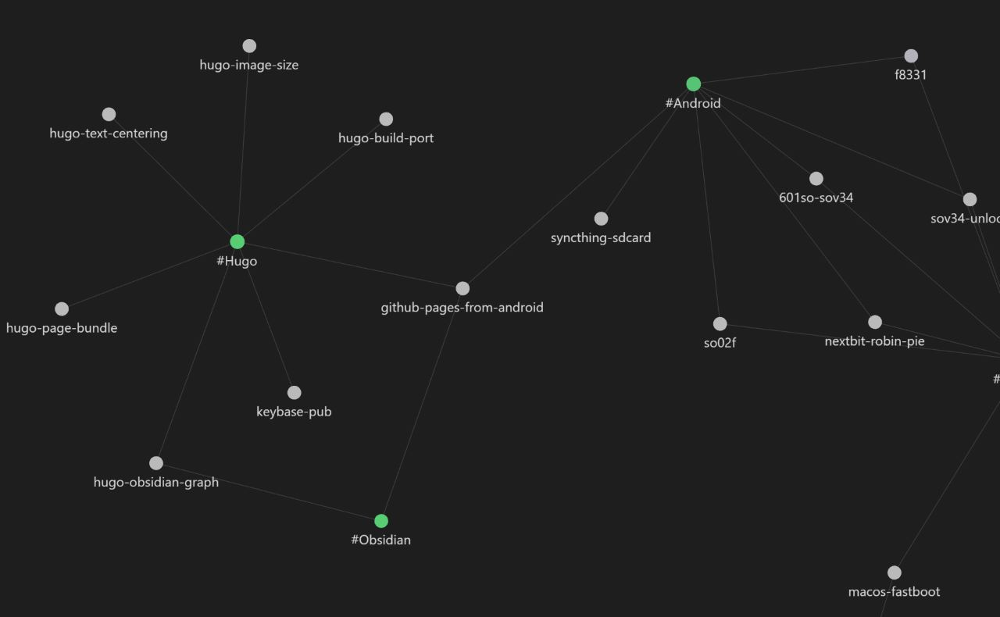

Hugo用MarkdownエディタとしてObsidianを使うに当たって生じた問題点
(追記有) 個人的にObsidianが熱いので記事の執筆もObsidianでやるか～と思ったのですが・・・主に検索面で問題が生じました
検索やグラフでファイル名しか表示されない
例えば記事に付けたタグで検索してみると、
な ん と い う こ と で し ょ う
全部indexです
HugoでPage Bundleに則った構成の場合、記事のファイル名はindex.mdで統一されるのでこの様になってしまいます
Obsidian特有のグラフ表示機能もこの有様で使い物になりません
検索時にパスも表示させたい場合
検索時にパスを指定するとパスも表示されるようになります
tag:#Hugo path:/.
メリット: 一番シンプル
デメリット: ハイライトがうざい、検索時に毎回ひと手間増えてだるい、グラフは解決できない
(参考) https://forum.obsidian.md/t/show-path-when-searching/40303/4
Hugoの構成を変えてみる
グラフの表示の方に関しては調べても解決方法が無さそうだったので、Hugoの構成を見直す他ありません
ただ、Page Bundleに則った構成ではビルド時に不都合が生じてしまいます
content/posts/example/
├ index.md
├ content.jpg
└ thumbnail.jpg
上記のような構成でビルドすると、記事のURLは
example.com/posts/example/
となりますが、ここでindex.mdをtitle.mdに変えてビルドすると、記事のURLは
example.com/posts/example/title/
となってしまい、画像の参照が上手くいかなくなってしまいます
解決策を考えなければなりません
Ugly URLsの有効化
uglyurls: true
config.yml(又はtoml)でUgly URLsを有効にすると、記事は
example.com/posts/example/title.html
としてビルドされる為、フォルダ階層の深さが変わらなくなり画像の参照も正しくなります・・・
メリット: configに一行追加するだけ
デメリット: 記事のURL全部変わる、Ugly URLsがそもそも推奨されていない
デメリットがかなりデメリットなので却下しました（小泉構文）
Front MatterでURLを指定する
想定としては、記事のファイル名は親フォルダーの名前と一緒にします
content/posts/example/
├ example.md
├ content.jpg
└ thumbnail.jpg
それぞれの記事のMarkdownファイルのFront Matterでビルド時のURLを指定します
url: /posts/example/
こうすることでビルド時のURLは
example.com/posts/example/
となるので、記事のファイル名がindex.mdの時と同じようにビルドされます
メリット: 記事のURLを変えずに済む
デメリット: 全記事に追記する必要があるのが少し面倒くさい、Front Matterの情報量が増える
現状実際にやるとしたらこちらかな（全記事に追記するのがだるいのでまだ保留中）
なんかいい方法無いかなぁー
追記: configファイルでpermalinkを設定する
これだよこれー！こういうのでいいんだよ！
permalinks:
posts: /:section/:year/:month/:filename
config.yamlに上記を追加します(TOMLは知らん) そして各記事のファイル名をindex.mdから直上のフォルダ名にします
例としてこの記事のパスは
/content/posts/2022/12/hugo-obsidian-graph/hugo-obsidian-graph.md
ですが、ビルド時にconfig.yamlの設定が適用され、記事のパスは
/posts/2022/12/hugo-obsidian-graph/
となります

というわけでグラフ上でのファイル名の区別がつくようになりました
…意味があるのかと言われると正直微妙な所
グラフ表示のメリットって何でしょうね？
大量のファイルを2次元的に可視化することで、断片的な情報を繋げたり、色分けして全体的な傾向を分析するとか、そういう感じでしょうか？
個人としてはブログの記事は大量生産するものではないので、別にグラフ表示を使う必然性が・・・うーん・・・
(参考) https://gohugo.io/content-management/urls/
ファイル名を日本語に設定してビルド時のパスは別で設定したい場合
例を上げると、マークダウンのファイル名はほげほげ.mdとかにして、ビルドした後のパスは/posts/2022/12/foobar/にしたい場合
configファイルでの設定は以下のようにします
permalinks:
posts: /:section/:year/:month/:filename
ここで出てきたslugは各記事のFront Matterで設定します
slug: "foobar"
こうすればURLが自由自在に！
・・・と言いたいところですが、カスタムできるのは記事のパスだけです
パスの深さを変えたりしてしまうと、Page Bundleで画像ファイルを管理してる場合にリンク切れを起こしてしまいます
TagFolderプラグインの使用
グラフ表示は放っておきます
タグによる分類を一覧で表示するだけなら、プラグインの導入だけで解決することが発覚しました
別記事に書きました